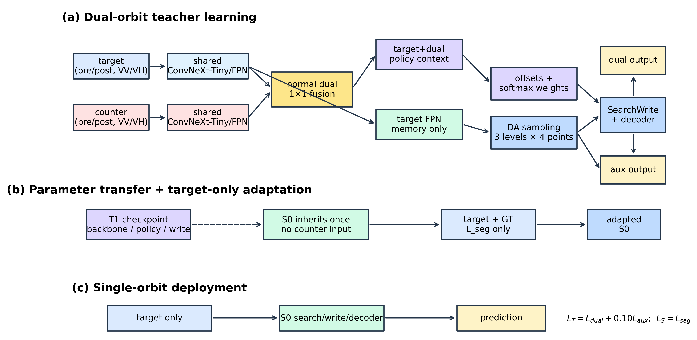
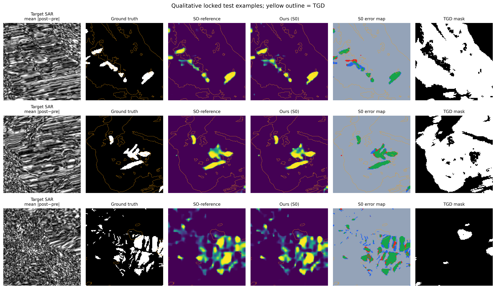
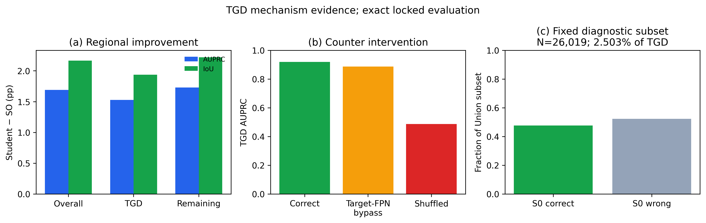
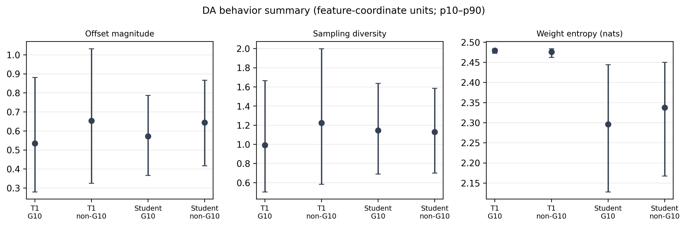
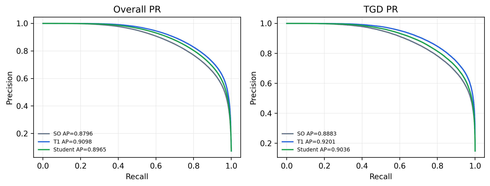
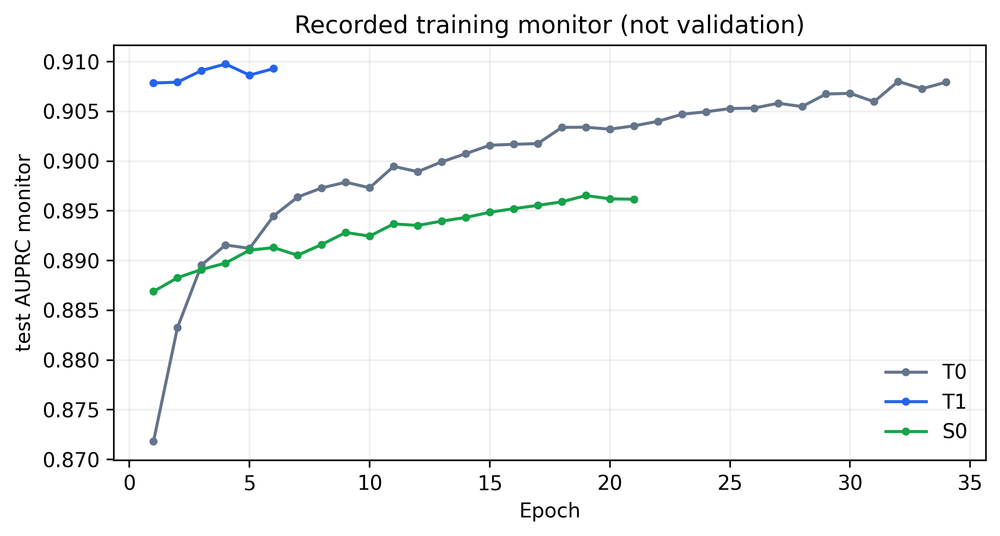

Haiti SAR GRSL assets v1
Read-only package for locked T0/T1/S0 evidence. See README.md and missing_items.md.
Figures
Figure 1 architecture

Figure 2 qualitative

Figure 3 TGD mechanism

Figure 4 DA behavior candidate

PR curves candidate

Training curves candidate

Tables